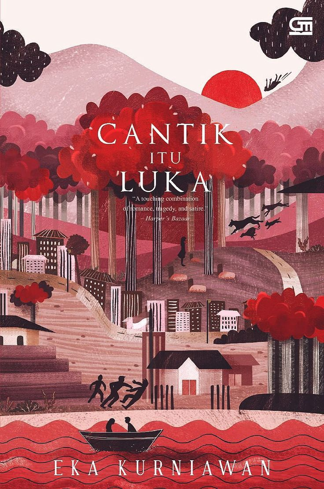
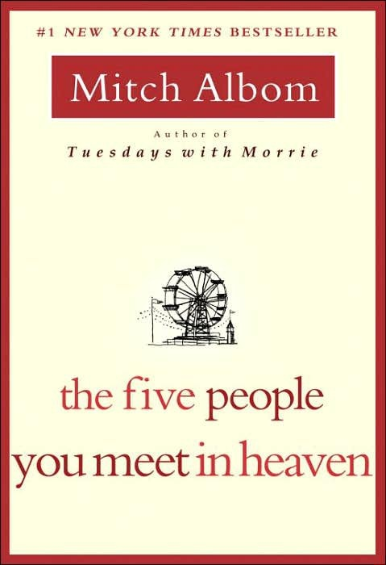

Scroll for read ↓
"Dunia ini tidak adil, tetapi manusia harus belajar untuk menertawakannya agar tidak menjadi gila."

"Seseorang tidak pernah benar-benar tahu seberapa kuat dirinya sampai menjadi kuat adalah satu-satunya pilihan yang ia miliki."
"Tak ada yang lebih mengerikan daripada ingatan yang tak mau mati."
"Manusia diciptakan dari tanah, dan pada akhirnya mereka akan kembali ke tanah. Namun di antara keduanya, mereka sibuk membuat luka satu sama lain."
"Cinta sering kali seperti dongeng: indah untuk didengar, tetapi menyakitkan ketika harus dialami dalam dunia nyata."
"Ia menyadari bahwa harapan adalah hal paling berbahaya di dunia ini. Harapan memberi manusia alasan untuk bertahan, tetapi juga cara paling lambat untuk membunuh mereka."
"Kadang-kadang, hal terbaik yang bisa dilakukan oleh seseorang yang terluka adalah pura-pura tidak merasakan apa-apa."
"Lost love is still love. It takes a different form, that's all. You can't see their smile or bring them food or ruffle their hair... But memory becomes your partner. You nurture it. You hold it. You dance with it."
"Cinta yang hilang tetaplah cinta..."

"Life has to end. Love doesn't."
"Hidup harus berakhir. Namun cinta tidak."
"There are no random acts. That we are all connected. That you can no more separate one life from another than you can separate a breeze from the wind."
"Tidak ada kejadian yang kebetulan..."
"Strangers are just family you have yet to come to know."
"Orang asing hanyalah anggota keluarga yang belum sempat kamu kenal."
"When you sacrifice something precious, you're not really losing it. You're just passing it on to someone else."
"Ketika kamu mengorbankan sesuatu yang berharga..."
"All parents damage their children. It cannot be helped. Youth, like pristine glass, absorbs the prints of its handlers."
"Semua orang tua melukai anak-anak mereka..."